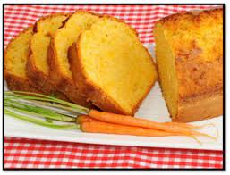

BUDINES
Budín es un término procedente del vocablo inglés pudding. El concepto, también mencionado como pudin o pudín, alude una preparación gastronómica que suele realizarse con pan, bizcocho u otros ingredientes mezclados con leche y/o huevo.
| |
Budín de chocolate.
El budín de chocolate es un tipo de postres con sabor a chocolate. Hay dos tipos principales: uno cocido y luego enfriado, con una textura parecida a natillas lograda con almidón, cacao, azúcar y leche .
| |
Budín Marinense.
es un tipo de alimento de la cocina inglesa y estadounidense que puede ser un postre o un plato no dulce (salado o picante) que es parte de la comida principal. El postre suele estar compuesto de diferentes ingredientes dependiendo de la región: migas de pan, bizcocho, arroz, sémola, etc. aglutinado con huevo y aderezado a veces con custard o frutas diversas.
 |
Budín de zanahoria.
El pastel de zanahoria, tarta de zanahoria o torta de zanahoria es un pastel dulce con zanahoria machacada mezclada en la masa. La zanahoria se ablanda en el proceso de cocción, y la tarta suele tener una textura densa y suave. Las zanahorias mejoran el sabor, textura y apariencia del pastel. En ocasiones se añade nuez tostada a la mezcla.
|  |
Budín de pan y manteca.
El budín de pan y mantequilla es un postre tradicional popular en la gastronomía del Reino Unido. Se elabora apilando rebanadas de pan con mantequilla y algunas pasas en una fuente para horno en la que se ha vertido una mezcla de huevo y leche, normalmente condimentado con nuez moscada. Entonces se hornea y se sirve.
| |